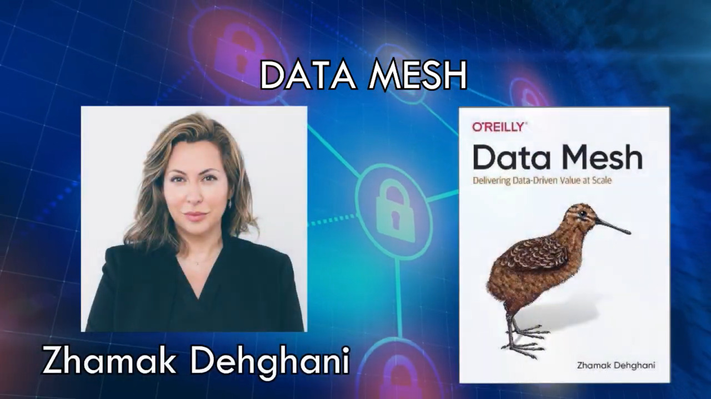
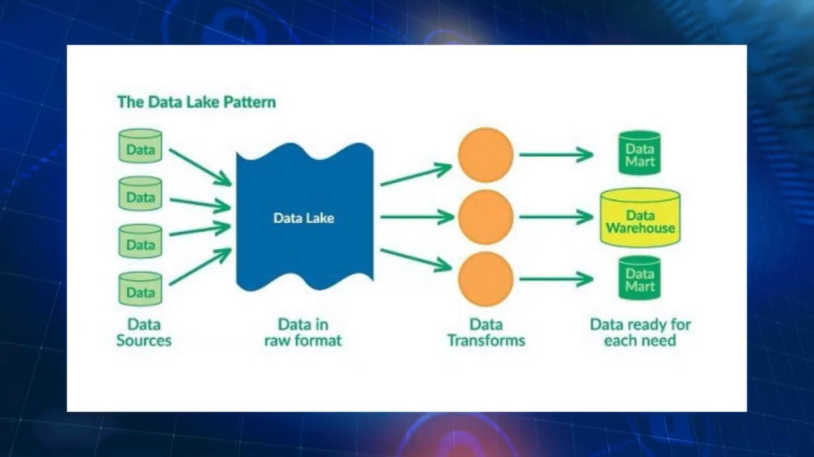
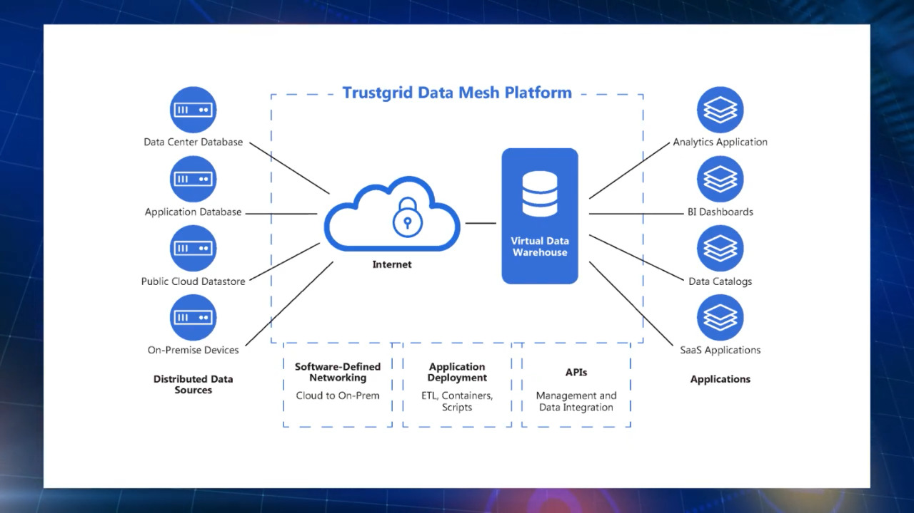

Data Mesh
Informacion
 Data Mesh consiste en la construcción de una infraestructura de autoservicio que permite a los equipos utilizar recursos y herramientas bajo demanda, para acceder a los datos correctos, procesarlos, prepararlos y analizarlos.
 Cada dominio es dueño de sus productos de datos, lo que debe redundar en un mejor gobierno de los mismos. Los dominios son autónomos a la hora de desarrollar sus productos de datos por lo que hay una mayor agilidad. El equipo de plataforma está enfocado en la plataforma y su evolución debido a la autonomía que se ha brindado a los dominios. Es posible plantear una adopción incremental de este tipo de arquitecturas lo que permite iterar más rápido y elimina parcialmente el riesgo asociado al despliegue de grandes plataformas de datos.

Retos a resolver
Gobierno
Es necesario también un control centralizado que garantice que los acuerdos de gobierno.
Federación
Necesidad de definir correctamente la federación de servicios.
Lenguajes de consulta
Es necesario establecer alguno de los “idiomas” mínimos a cumplir para que
haya interoperabilidad real.
Control
Se hace necesario que haya un sistema común que recoja esta información no dependiente de
cada dominio federado.
Incentivos
Deben existir mecanismos que incentiven el cumplimiento de los interfaces federados y el
buen gobierno.
Consultas entre dominios
Dependiendo del modelo de despliegue y arquitectura pueden surgirproblemas técnicos a resolver como
el cruce de datos entre dominios.